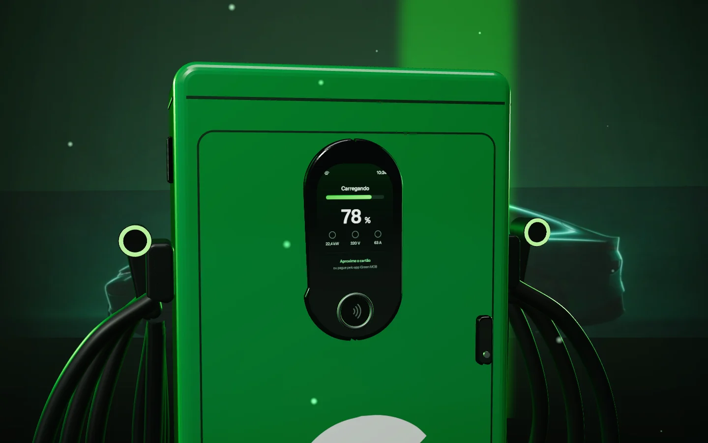
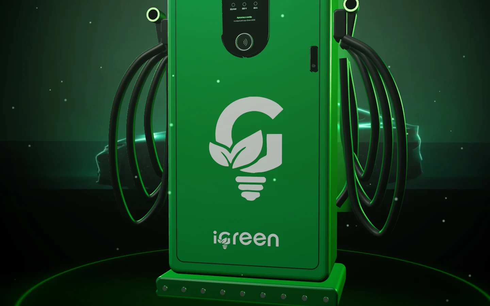
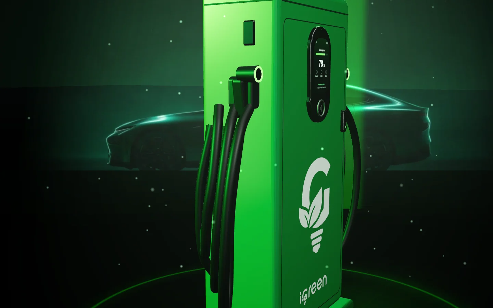
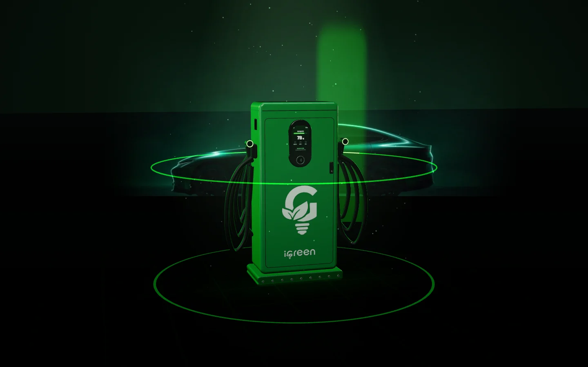
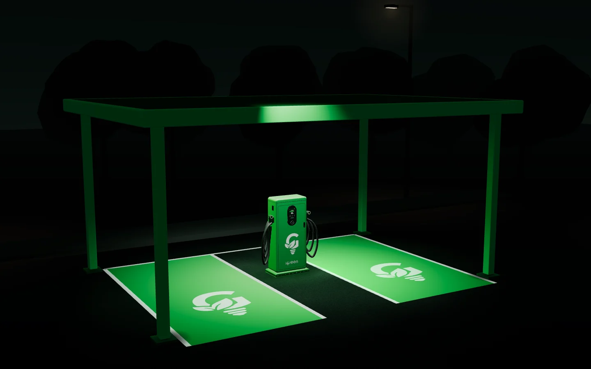
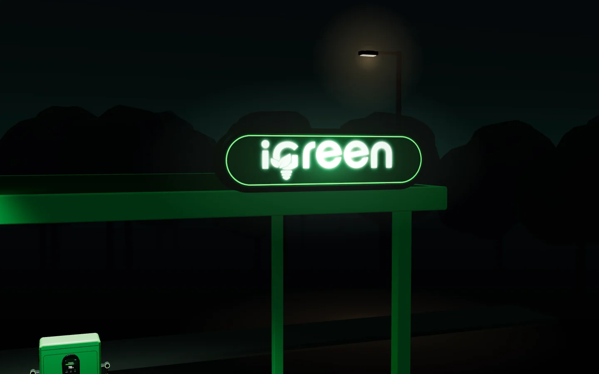
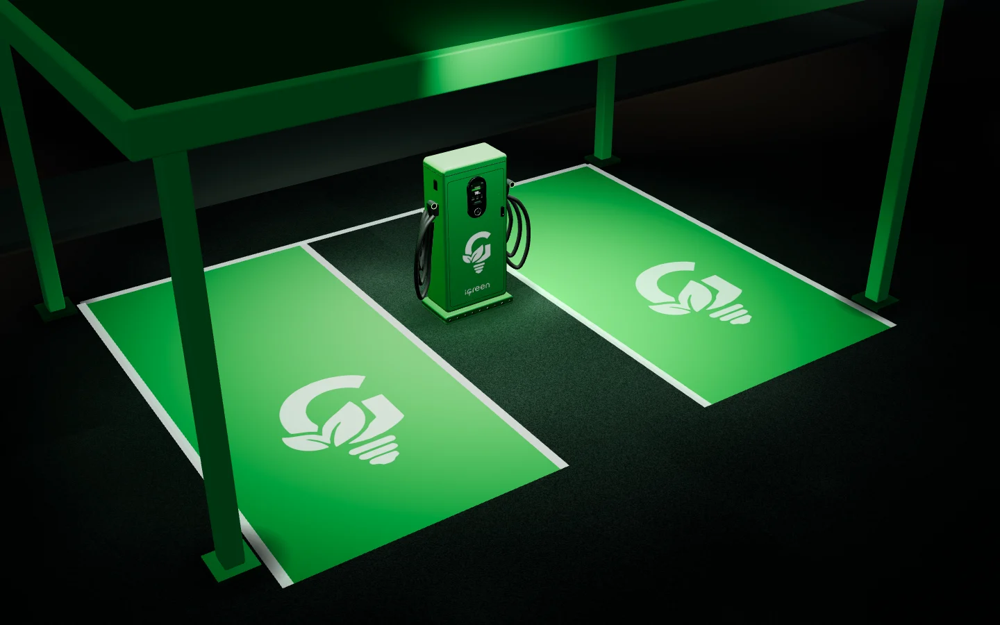
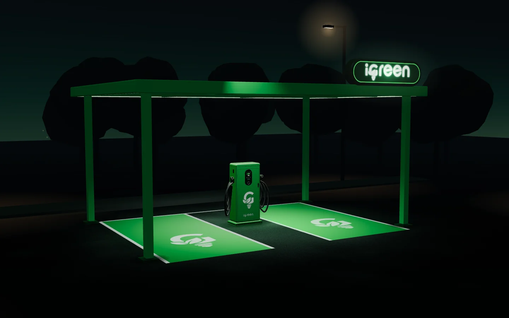

01A tela
A recarga é o primeiro toque.
O motorista vê a carga subir na tela do carregador e acompanha bateria, energia, tempo e custo em tempo real no app iGreen MOB.

O eletroposto iGreen
Conheça o carregador iGreen parte por parte, as camadas de receita que ele conecta e como o seu ponto fica com a cobertura, o letreiro e as vagas da bandeira.
O eletroposto, parte por parte
Primeiro o carregador, de perto, e as camadas de receita que cada recarga conecta. Depois a estrutura que leva a bandeira iGreen para o seu ponto.
01A tela
O motorista vê a carga subir na tela do carregador e acompanha bateria, energia, tempo e custo em tempo real no app iGreen MOB.

02A bandeira
O G de folhas e lâmpada passa a identificar o seu eletroposto. A iGreen leva identidade visual e campanha para comunicar os benefícios a cada motorista.

03A conexão
A recarga aproxima. Energia, seguro e telefonia mantêm a conexão com o seu negócio, e cada uma delas vira uma camada de receita recorrente.


04Camada 1 de 4 · Energia
Ao enviar a conta e habilitar o desconto de energia, o cliente recebe R$ 50 em cashback para usar nos eletropostos iGreen.

05Camada 2 de 4 · Seguro
A primeira mensalidade vira crédito integral em recargas. Depois, o cliente recebe 10% de cashback mensal em bônus.
Exemplo · Dolphin MiniSeguro de R$ 500/mês = R$ 500 em recarga inicial + R$ 50/mês em bônus recarga para o motorista.

06Camada 3 de 4 · Telefonia
Cada linha ativa conectada pelo seu ponto entra para a sua carteira e rende todo mês.

07Camada 4 de 4 · Rede
Um novo cliente iGreen cadastrado pelo QR Code do seu ponto fica vinculado à sua carteira, inclusive quando recarrega em outros eletropostos iGreen.
08O ecossistema
Energia, seguro, telefonia e rede: quatro camadas de receita que começam numa recarga feita no seu ponto. Cada novo cadastro amplia seu potencial de receita.
Simular minha receita
 4%Energia
4%Energia 5%Seguro
5%Seguro R$ 7Telefonia
R$ 7Telefonia09A estrutura
Cobertura verde e iluminação deixam o eletroposto visível de longe e protegem quem para para recarregar.

10O letreiro
O letreiro iGreen iluminado identifica o ponto para quem procura onde recarregar, de dia e à noite.

11As vagas
As vagas verdes com o G da iGreen mostram ao motorista onde parar para recarregar, uma de cada lado do carregador.

12No seu ponto
Identidade visual e campanha para comunicar os benefícios a cada motorista. Converse com o seu consultor sobre a migração do seu eletroposto.
Falar com o consultor
Seu próximo passo
Converse sobre a migração de bandeira, a compatibilidade do seu equipamento e as condições para o seu eletroposto.